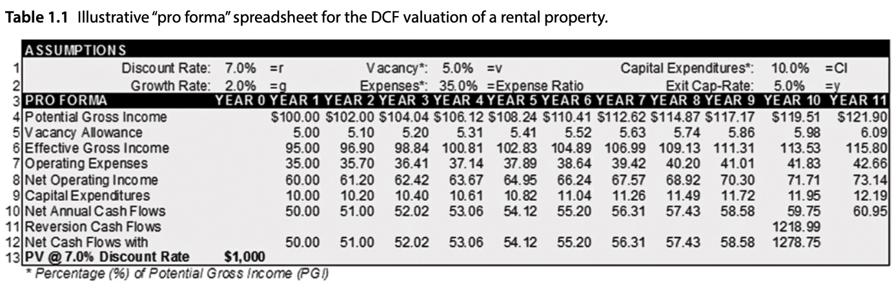

A Basic Discounted Cash Flow Valuation#
Chapter 1 of [dNG18] showcases the structure and functionality of a basic Discounted Cash Flow (DCF) Valuation for a real estate property.
Like in the vast majority of cases, the implementation of their DCF model is in Microsoft Excel. However, in these notebooks, we will be implementing the same methodology in Python, using the Rangekeeper open source library.
In this notebook, the core computational objects (classes), their functionality, and how they are composed together into a valuation model are outlined.
To do so, we will be replicating Table 1.1 from [dNG18], which describes this DCF:


Setup#
Use the built Rangekeeper package with its calculations and pandas extras. This tutorial uses explicit AUD units and Gregorian dates; it does not depend on the machine locale.
Import Libraries:
%matplotlib inline
from datetime import date
from uuid import uuid4
import math
import pandas as pd
import rangekeeper as rk
from rangekeeper.model.flow import Flow, Stream, from_events, from_periods
from rangekeeper.model.measure import Quantity, Measure
from rangekeeper.model import Metadata, Definitions, System, Entity, Characteristics, Value
from rangekeeper.duration import make_periods
from rangekeeper.calculations import series, projection, financial
from rangekeeper.adapters.pandas import to_series
print("Rangekeeper import:", rk.__file__)
print("Rangekeeper:", rk.__file__)
Rangekeeper import: /private/tmp/rk-turn4-wheel/site/rangekeeper/__init__.py
Rangekeeper: /private/tmp/rk-turn4-wheel/site/rangekeeper/__init__.py
The Foundational Elements of a Proforma#
A Flow#
The core element of a Cash Flow analysis is the cash flow itself; a sequence of ‘movements’ of currency (whether positive – inflow, or negative – outflow) , where each movement is associated with a date and a quantity. A movement could be considered a transaction, payment, or transfer of currency, but it does not consider the parties involved – only its amount, date, and direction.
A cash flow is also sometimes referred to as a ‘line item’, which is a way of designating the subject of flows, e.g.: “Operational Expenses”, or “Income from Building 2’s Parking”
Rangekeeper represents this content with an immutable Flow from model.flow.
Its ordered movements record calendar coordinates, magnitudes and optional evidence.
The model logic defines the meaning of each Flow and selects its calculations. Flows carry no semantic kind or basis.
Flows can use currency, energy, mass or other units. A canonical Value gives a Flow
its UUID and owner-local key. pandas is used here only to display detached data.
Initializing a Flow#
Currency is explicit. A Measure defines the meaning and canonical units of a Value. The helper below creates immutable Model content; it does not solve an investigation.
currency = "AUD"
measure = Measure(id=uuid4(), code="cash", name="Cash movements", units=currency)
def record_flows(flows):
"""Author one canonical owner; each named Flow becomes a distinct Value."""
values = tuple(Value(id=uuid4(), key=key, kind="flow", measure=measure.id, flow=flow)
for key, flow in flows.items())
entity = Entity(id=uuid4(), code="property", name="Example property",
characteristics=Characteristics(values=values))
model = rk.Model.create(metadata=Metadata(id=uuid4(), schema_version="0.5.0"),
definitions=Definitions(measures=(measure,)),
system=System(entities=(entity,)))
return model, Stream.from_values(model, (value.id for value in values))
print(currency)
AUD
Next we define a Flow object from a list of dates and amounts:
transactions = {date(2020,1,1): 100, date(2020,1,2): 200,
date(2019,1,1): 300, date(2020,12,31): -100}
# The author makes ordering explicit; constructors do not reorder evidence.
dates = sorted(transactions)
cash_flow = from_events(dates, [transactions[d] for d in dates], units=currency)
Display a detached pandas representation of the Flow:
to_series(cash_flow, name="Operational Expenses", timing="last_day")
2019-01-01 300
2020-01-01 100
2020-01-02 200
2020-12-31 -100
Name: Operational Expenses, dtype: object
Inspect canonical movements and their calendar coordinates. Pandas conversion is a detached presentation operation.
cash_flow.movements
(Movement.from_data({'key': '2019-01-01', 'date': '2019-01-01', 'magnitude': 300}),
Movement.from_data({'key': '2020-01-01', 'date': '2020-01-01', 'magnitude': 100}),
Movement.from_data({'key': '2020-01-02', 'date': '2020-01-02', 'magnitude': 200}),
Movement.from_data({'key': '2020-12-31', 'date': '2020-12-31', 'magnitude': -100}))
[movement.date for movement in cash_flow.movements]
[datetime.date(2019, 1, 1),
datetime.date(2020, 1, 1),
datetime.date(2020, 1, 2),
datetime.date(2020, 12, 31)]
Its units can be inspected through the units property:
cash_flow.units
'AUD'
Overview of a Flow#
A Flow has units and ordered movements. The model logic supplies their meaning and chooses the operations. A Value supplies its key and UUID in a Model. Movements can be positive, negative, zero, or unresolved. Dates must be ordered; repeated event dates need distinct keys. No dataframe is stored inside the Model.
to_series(cash_flow, name="Operational Expenses", timing="last_day").to_frame()
| Operational Expenses | |
|---|---|
| 2019-01-01 | 300 |
| 2020-01-01 | 100 |
| 2020-01-02 | 200 |
| 2020-12-31 | -100 |
Periods and spans#
Periods use date-only, half-open boundaries: the start is included and the end is excluded. This sequence covers eleven years. A period movement stores coverage without a redundant date. We choose timing="last_day" for date-based table labels. The PV calculation below uses an explicit annual movement index, with the first payment at period one.
start_date = date(2001,1,1)
num_periods = 11
periods = make_periods(start_date, frequency="year", count=num_periods)
periods[0], periods[-1]
(Period.from_data({'start': '2001-01-01', 'end': '2002-01-01'}),
Period.from_data({'start': '2011-01-01', 'end': '2012-01-01'}))
Project known values#
calculations.projection evaluates known inputs. Compound growth multiplies the initial value by (1 + rate) ** period_index, starting at index zero. Distribution allocation is a separate operation that preserves the supplied total.
compounding_rate = 0.02
Use the Flow content and projection function to construct the Potential Gross Income line item:
potential_gross_income = projection.project(
Quantity(magnitude=100, units=currency), periods=periods,
method="compound", rate=compounding_rate)
to_series(potential_gross_income, name="Potential Gross Income", timing="last_day")
2001-12-31 100.0
2002-12-31 102.0
2003-12-31 104.04
2004-12-31 106.1208
2005-12-31 108.243216
2006-12-31 110.40808
2007-12-31 112.616242
2008-12-31 114.868567
2009-12-31 117.165938
2010-12-31 119.509257
2011-12-31 121.899442
Name: Potential Gross Income, dtype: object
Similarly, we define the ‘Vacancy’ line item by multiplying the movements of the
‘Potential Gross Income’ Flow by a vacancy rate:
vacancy_rate = 0.05
vacancy = series.scale(potential_gross_income, -vacancy_rate)
to_series(vacancy, name="Vacancy Allowance", timing="last_day")
2001-12-31 -5.0
2002-12-31 -5.1
2003-12-31 -5.202
2004-12-31 -5.30604
2005-12-31 -5.412161
2006-12-31 -5.520404
2007-12-31 -5.630812
2008-12-31 -5.743428
2009-12-31 -5.858297
2010-12-31 -5.975463
2011-12-31 -6.094972
Name: Vacancy Allowance, dtype: object
Note
Note the sign of the movements of the ‘Vacancy Allowance’ Flow – it is
negative, because it is an outflow.
A Stream#
A Stream selects canonical Flow Values within one immutable Model revision. Names are labels; UUIDs identify the Values. Here, both Flows use the same periods and units, so they can be added directly.
income_model, effective_gross_income = record_flows({
"potential_gross_income": potential_gross_income, "vacancy": vacancy})
[(value.key, value.id) for value in effective_gross_income.values]
[('potential_gross_income', UUID('1e67a7bd-f983-4414-9d4c-2bb3ee671340')),
('vacancy', UUID('8d08d1eb-668f-49d0-8be1-c3eae55f1820'))]
The Stream retains its Model revision and Value identities. Pointwise addition is explicit and does not change either input.
effective_gross_income_flow = series.sum_flows(effective_gross_income.flows).flow
to_series(effective_gross_income_flow, name="Effective Gross Income", timing="last_day")
2001-12-31 95.0
2002-12-31 96.9
2003-12-31 98.838
2004-12-31 100.81476
2005-12-31 102.831055
2006-12-31 104.887676
2007-12-31 106.98543
2008-12-31 109.125138
2009-12-31 111.307641
2010-12-31 113.533794
2011-12-31 115.80447
Name: Effective Gross Income, dtype: object
The result retains the period coordinates and period-end observation dates. An unequal calendar would require explicit alignment or resampling.
With this in mind, we can complete Table 1.1
opex_pgi_ratio = .35
operating_expenses = series.scale(potential_gross_income, -opex_pgi_ratio)
net_operating_income = series.sum_flows((effective_gross_income_flow, operating_expenses)).flow
to_series(net_operating_income, name="Net Operating Income", timing="last_day")
2001-12-31 60.0
2002-12-31 61.2
2003-12-31 62.424
2004-12-31 63.67248
2005-12-31 64.94593
2006-12-31 66.244848
2007-12-31 67.569745
2008-12-31 68.92114
2009-12-31 70.299563
2010-12-31 71.705554
2011-12-31 73.139665
Name: Net Operating Income, dtype: object
capex_pgi_ratio = .1
capital_expenditures = series.scale(potential_gross_income, -capex_pgi_ratio)
net_annual_cashflows = series.sum_flows((net_operating_income, capital_expenditures)).flow
to_series(net_annual_cashflows, name="Net Annual Cashflows", timing="last_day")
2001-12-31 50.0
2002-12-31 51.0
2003-12-31 52.02
2004-12-31 53.0604
2005-12-31 54.121608
2006-12-31 55.20404
2007-12-31 56.308121
2008-12-31 57.434283
2009-12-31 58.582969
2010-12-31 59.754628
2011-12-31 60.949721
Name: Net Annual Cashflows, dtype: object
To calculate the reversion cashflow, we set up a period that spans the 10th year of the property:
reversion_period = periods[9]
exit_caprate = 0.05
# Capitalize the following year's net cashflow at the end of the tenth year.
reversion_flow = from_periods((reversion_period,),
(net_annual_cashflows.movements[-1].magnitude / exit_caprate,), units=currency)
to_series(reversion_flow, name="Reversion", timing="last_day")
2010-12-31 1218.99442
Name: Reversion, dtype: object
Finally, we can aggregate the net and reversion cashflows in order to calculate the project’s complete cashflows:
to_series(reversion_flow, name="Reversion", timing="last_day")
2010-12-31 1218.99442
Name: Reversion, dtype: object
net_cashflows_with_reversion = series.sum_flows(
(net_annual_cashflows, reversion_flow), join="union", missing="zero").flow
to_series(net_cashflows_with_reversion, name="Net Cashflow with Reversion", timing="last_day")
2001-12-31 50.0
2002-12-31 51.0
2003-12-31 52.02
2004-12-31 53.0604
2005-12-31 54.121608
2006-12-31 55.20404
2007-12-31 56.308121
2008-12-31 57.434283
2009-12-31 58.582969
2010-12-31 1278.749048
2011-12-31 60.949721
Name: Net Cashflow with Reversion, dtype: object
net_cashflows_with_reversion = series.trim(
net_cashflows_with_reversion, start=start_date, end=date(2011,1,1))
to_series(net_cashflows_with_reversion, name="Net Cashflow with Reversion", timing="last_day")
2001-12-31 50.0
2002-12-31 51.0
2003-12-31 52.02
2004-12-31 53.0604
2005-12-31 54.121608
2006-12-31 55.20404
2007-12-31 56.308121
2008-12-31 57.434283
2009-12-31 58.582969
2010-12-31 1278.749048
Name: Net Cashflow with Reversion, dtype: object
The canonical Model holds the named Flow Values. A detached pandas table presents the same content in the layout used by Table 1.1.
flows = {
"Potential Gross Income": potential_gross_income,
"Vacancy": vacancy,
"Effective Gross Income": effective_gross_income_flow,
"Operating Expenses": operating_expenses,
"Net Operating Income": net_operating_income,
"Capital Expenditures": capital_expenditures,
"Net Annual Cashflows": net_annual_cashflows,
"Reversion": reversion_flow,
"Net Cashflow with Reversion": net_cashflows_with_reversion,
}
model, table_stream = record_flows(flows)
# Presentation is detached. Blank table cells do not change canonical missingness.
table = pd.concat([to_series(value.flow, name=value.key, timing="last_day") for value in table_stream.values], axis=1).T
table
| 2001-12-31 | 2002-12-31 | 2003-12-31 | 2004-12-31 | 2005-12-31 | 2006-12-31 | 2007-12-31 | 2008-12-31 | 2009-12-31 | 2010-12-31 | 2011-12-31 | |
|---|---|---|---|---|---|---|---|---|---|---|---|
| Potential Gross Income | 100.0 | 102.0 | 104.04 | 106.1208 | 108.243216 | 110.40808 | 112.616242 | 114.868567 | 117.165938 | 119.509257 | 121.899442 |
| Vacancy | -5.0 | -5.1 | -5.202 | -5.30604 | -5.412161 | -5.520404 | -5.630812 | -5.743428 | -5.858297 | -5.975463 | -6.094972 |
| Effective Gross Income | 95.0 | 96.9 | 98.838 | 100.81476 | 102.831055 | 104.887676 | 106.98543 | 109.125138 | 111.307641 | 113.533794 | 115.80447 |
| Operating Expenses | -35.0 | -35.7 | -36.414 | -37.14228 | -37.885126 | -38.642828 | -39.415685 | -40.203998 | -41.008078 | -41.82824 | -42.664805 |
| Net Operating Income | 60.0 | 61.2 | 62.424 | 63.67248 | 64.94593 | 66.244848 | 67.569745 | 68.92114 | 70.299563 | 71.705554 | 73.139665 |
| Capital Expenditures | -10.0 | -10.2 | -10.404 | -10.61208 | -10.824322 | -11.040808 | -11.261624 | -11.486857 | -11.716594 | -11.950926 | -12.189944 |
| Net Annual Cashflows | 50.0 | 51.0 | 52.02 | 53.0604 | 54.121608 | 55.20404 | 56.308121 | 57.434283 | 58.582969 | 59.754628 | 60.949721 |
| Reversion | NaN | NaN | NaN | NaN | NaN | NaN | NaN | NaN | NaN | 1218.99442 | NaN |
| Net Cashflow with Reversion | 50.0 | 51.0 | 52.02 | 53.0604 | 54.121608 | 55.20404 | 56.308121 | 57.434283 | 58.582969 | 1278.749048 | NaN |
Discount and check the result#
The annual discount rate is 7%. The first payment is one period after the valuation date. Discount the combined cashflows so the reversion receives ten periods of discounting.
discount_rate = 0.07
pvs = financial.calculate_pv(net_cashflows_with_reversion, rate=discount_rate, first_period=1)
to_series(pvs, name="Present Value", timing="last_day")
2001-12-31 46.728972
2002-12-31 44.545375
2003-12-31 42.463816
2004-12-31 40.479525
2005-12-31 38.587959
2006-12-31 36.784783
2007-12-31 35.065868
2008-12-31 33.427276
2009-12-31 31.865254
2010-12-31 650.051174
Name: Present Value, dtype: object
property_pv = series.total(pvs).magnitude
print(f"Property PV: ${property_pv:,.0f}")
# Independent scalar oracle: ten annual movements plus terminal proceeds.
expected = sum(50 * 1.02**i / 1.07**(i+1) for i in range(10)) + (50*1.02**10/.05)/1.07**10
assert math.isclose(property_pv, expected, rel_tol=1e-12)
assert math.isclose(property_pv, 1000, rel_tol=1e-12)
assert len(net_cashflows_with_reversion.movements) == 10
assert model.value(table_stream.value_ids[0]).flow.units == "AUD"
# A migrated consumer must not import the superseded implementation.
import sys
assert not any(name in sys.modules for name in ("rangekeeper.flux", "rangekeeper._legacy_duration", "rangekeeper.formula", "rangekeeper.graph.legacy"))
Property PV: $1,000